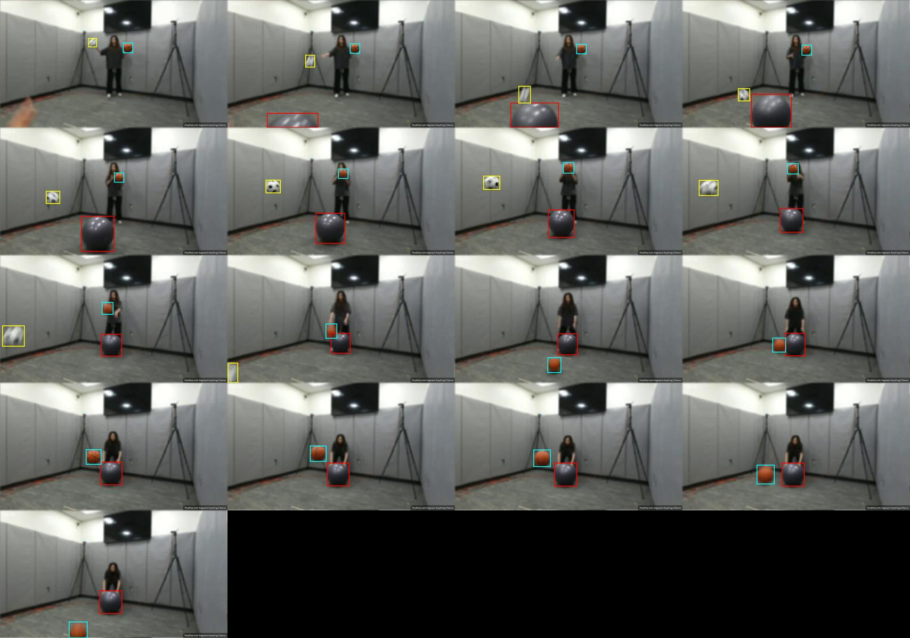
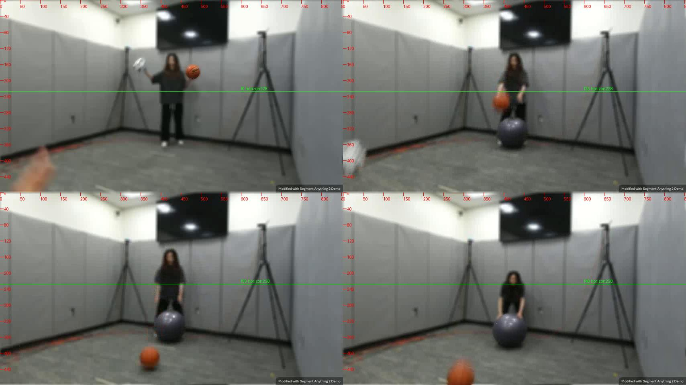
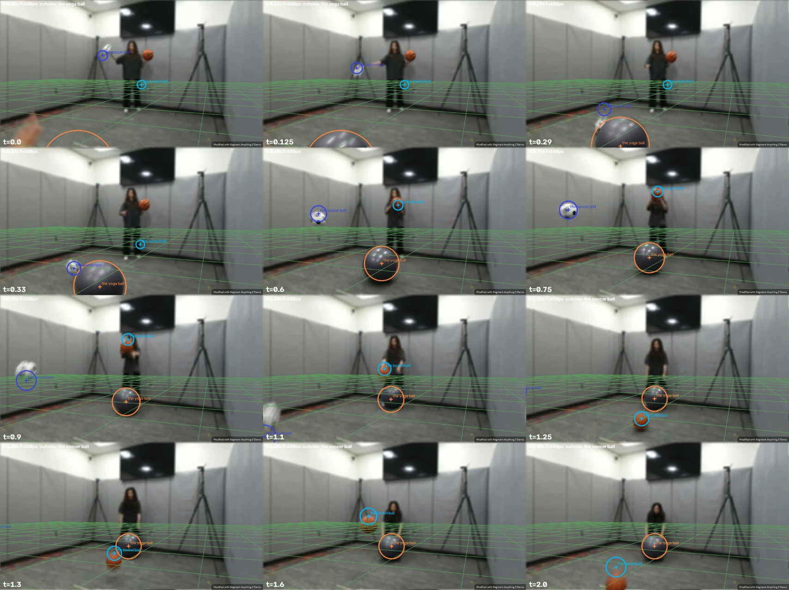
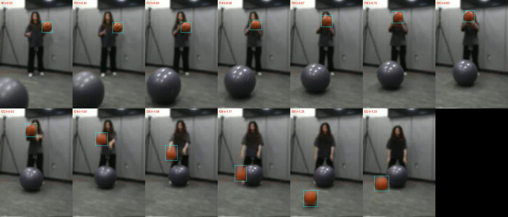

← 视频与问题 · 评估员逐视频报告（由 outputs/eval/*.md 生成）
主因层：尺度（焦距 f=650 只来自 lab 先验，本视频重力与锚点给出 f≈450–470）+ 拟合（ballistic 把手持段当抛体、t_on 取错）+ 几何（3D 两物体距离按像面算）+ 路由（D3 固定 Qwen，Qwen 照抄几何） 根因：本视频的 f 没有任何度量证据，回退到 lab 先验 650（单票），所有尺寸和横向速度都被压成约 0.70 倍；ballistic 模式又用固定的 g 去拟合 f 偏大的图像抛物线，再加上篮球 0–0.95 s 是手持段却被当成抛体，结果残差大、conf 低。另有两条独立问题：几何流水线的 3D 两物体距离只算像面距离（篮球–瑜伽球 0.397，实际约 1.2），Qwen 照抄几何的速度和距离提示。1.1 s 篮球 9.32 m/s 与画面不自洽；足球 2.0 s 的两题在画面里观测不到。
captured_0061 评估报告（evaluator，2026-10-24）
结果来源：outputs/val_defaults_routed.csv（0.6983）；3D 场景 outputs/scene_fit_eval/c_support_v8b/captured_0061.json（v7 对照）；跟踪 outputs/tracks（tracks_qwen 和 tracks_v9 对本视频的框完全相同）；场景图 outputs/scenegraph（grid，拟合用的就是它）、scenegraph_pf、scenegraph_pfc。
题目表
| # | 题 | 答案 | 几何 | 拟合（conf） | Qwen | 最终 | MRA | 主因层 |
|---|---|---|---|---|---|---|---|---|
| q0 | 瑜伽球直径 cm | 52.2 | 37.7 | 37.0（0.31） | 65 | 65（vlm） | 0.7 | 尺度（f=650 → ×0.70）；Qwen 给的是典型尺寸 |
| q1 | 足球直径 cm | 17.5 | 17.3 | 15.8（0.13） | 22 | 22（vlm） | 0.7 | 路由（几何本来对，D3 固定用 Qwen）；拟合里三个误差互相抵消 |
| q2 | 2.0 s 足球–篮球距离 m | 1.946 | 3.0（回退） | 0.99（0.06） | 1.12 | 1.12 | 0.5 | 观测不到（足球 1.17 s 起出画） |
| q3 | 2.0 s 篮球–瑜伽球距离 m | 1.659 | 0.397 | 1.366（0.04） | 0.48 | 0.48 | 0.2 | 几何（3D 距离按像面算）→ Qwen 照抄；真值也有张力 |
| q4 | 2.0 s 足球到地面距离 m | 1.691 | 3.0（回退） | 0.171（0.06，按 1.125 s 算的） | 无 | 3.0（geo 回退） | 0.2 | 观测不到 |
| q5 | 0.6 s 足球速度 | 2.792 | 1.969 | 1.542（0.13） | 1.969 | 1.969 | 0.7 | 尺度（f）+ Qwen 照抄几何 |
| q6 | 0.9 s 足球速度 | 2.75 | 2.044 | 2.352（0.13） | 2.044 | 2.044 | 0.7 | 同上 |
| q7 | 1.1 s 篮球速度 | 9.32 | 2.342 | 3.289（0.04） | 2.342 | 2.342 | 0.2 | 真值存疑（画面上限约 5 m/s） |
| q8 | 1.6 s 篮球速度 | 0.8405 | 1.052 | 0.900（0.04） | 1.31 | 1.31 | 0.4 | 路由（拟合 0.90 最准，但 conf 低） |
- 平均：路由后 0.478；纯拟合 0.611（v7 是 0.622，其中 q3 的 1.0 是偶然命中）。
- 九题的拟合 conf 都在 0.04–0.31 之间，任何门控都选不到拟合值。
画面事实
叠加图都在 scratchpad：
- 原帧网格（每 3 帧，SAM2 框）：
captured_0061/frames_grid.jpg
- 四帧全分辨率（带刻度和地平线 y=228）：
captured_0061/frames_full4.jpg
- v8b render_overlay（t=0, 0.125, 0.29, 0.33, 0.6, 0.75, 0.9, 1.1, 1.25, 1.3, 1.6, 2.0）：
captured_0061/overlay_v8b.jpg
- 篮球局部 f8–f32（手持 → 举过头 → 向下摔）：
captured_0061/basketball_crops.jpg


场景：实验室，854×480，24 fps，49 帧。人站在后墙前，相机水平。墙缝在画面里是竖直的；地平线约在 y=228，和人的腰部同高。
- 瑜伽球：f0 时摄像者的手出现在左下角，把瑜伽球滚进画面。球在 f2–f11 被下边缘截断，之后向人滚去。f28 前后（约 1.17 s）停住，然后在 f30–f40 又朝镜头移了约 0.3 m（框宽 76→86），f40 起静止，人双手扶着它。
- 足球：f0 时已经从人举起的左手脱手。f7（0.29 s）在地面弹起，y 方向最低点在 f7。之后向左上、并朝镜头飞，图像里的顶点约在 f18（0.75 s）。然后下落，f27（1.125 s）从左下角出画，之后一直不在画面里。
- 篮球：f0–f22（0–0.92 s）一直在人手里。先抱在胸前，f14–f20 被双手举过头顶，f22–f24 双臂向下把球摔出（见 basketball_crops.jpg）。f30（1.25 s）在瑜伽球前方触地弹起，f38–f39（1.6 s）到达顶点，之后下落并朝镜头靠近，f48（2.0 s）贴着下边缘，按我的地面行估计正好再次触地。
链路逐层
- 解析：九题都对。q4 "distance between the soccer ball and the floor" 走的是 fit-height-above-ground（球底到平面，part 为空），语义没问题。"velocity" 按速率处理。
- 清单：三个球加 floor（structure），没有多余的物体。presence v3 缓存里对本视频没有 objects 字段，不影响。
- 跟踪：三种跟踪缓存对本视频的框完全相同，逐帧都是对的物体。足球 f28 起无框，这是正确的。瑜伽球 f2–f11 的框底边是 480（下边缘截断），篮球 f48 的框也贴着下边缘，但宽度（70 px）仍是完整直径。足球和篮球下落时有明显的运动模糊：足球 f24 的框是 84×79，篮球 f28 是 42×57。
- 场景图：
- grid 版（拟合用的就是它）：soccer held_by hand 0–0.42（错，足球 f0 就已脱手）；basketball held_by 0–0.42（错，实际手持到约 0.92 s）。
- pf 版：basketball held_by 0–1.29（偏晚约 0.35 s，因为 f24–f28 球从人身前落下）；soccer 在 0.06–0.33 段是 attached_to（错）。
- pfc 版的 contact：篮球–瑜伽球 1.15–1.6。实际是篮球在瑜伽球前方约 0.7 m 处弹起，两者只是在画面里重叠，没有物理接触。
- 三个版本都没有弹跳（on floor 的瞬时）事件。
- 拟合 / 尺度（v8b）：
- 焦距：日志
stage A ... focal votes=[650]，f_source=lab_prior。几何流水线用瑜伽球的速度 prior 估出 f=187，判为不合理，回退到 650。原因是瑜伽球几乎沿视线运动（radial 2.25 m/s），而 prior 是 2.51 m/s，这样的估计条件极差。 - f 的独立证据（不用答案）：把 depth_info 锚点（按 range 换算成 z）配上框尺寸得到 Z(t)，再拟合 q(t)=(y−cy)·Z(t)=f·Y(t) 的二次项，f = q''/g。
- 篮球弹起后 f31–f46：f≈450–465（用宽或用短边都一样，对初始 f 不敏感：400 和 650 起算结果相同）；
- 足球 f9–f25：f≈400–440（靠近画面边缘，有广角畸变和模糊，可信度较低）；
- 篮球 f13–f28 给出 516，但这一段是手持，不可用。
- 结论：f≈450–470。在 f=460 时，由锚点和框得到的 D 是：瑜伽球 0.50，篮球 0.23–0.25（6/7 号标准球 23–24.3 cm，自洽），足球 0.174。在 f=650 时分别是 0.36 / 0.17 / 0.13，篮球直径 16 cm，明显不是篮球。这与 0041x 报告里"实验室 f≈430–560"一致。
- 平面：法向和地平线（y≈230）与画面一致：墙缝竖直，人的脚 y≈358、头 y≈130，按地平线 228 推出相机高度约 0.57×身高。平面高度 0.668 m 是 f=650 造成的。用 f=460 和瑜伽球静止时贴地反推，相机高约 0.86 m，对应人高约 1.5–1.65 m；而 f=650 时人只有 1.17 m。所以平面方向与地板重合，只有度量尺度错。这次的地平线不是假检测。
- 锚点（五个：瑜伽球 0.6 s 2.133；篮球 1.1 s 2.42 和 1.6 s 1.9015；足球 0.6 s 1.937 和 0.9 s 1.585）：拟合把五个锚点都硬约束成 z（z 与锚点完全相等），但对应的 |P| 是 2.184 / 2.423 / 1.918 / 2.073 / 1.793。足球两个锚点在画面边缘，按 range 偏差 +7% 和 +13%，这一项已在修。dense depth 的 LOO 误差 0.271，可信度低。
- ballistic 逐帧残差（拟合投影减框中心，单位 px）：
- 篮球 f0–f10 的 y 方向偏 +92 到 +133（球被放在腰下）。t_on=0.29，又凭空加了 bounce@0.351，用来把向下的 v0=5.3 m/s 翻成向上。原因是把 0–0.92 s 的手持举球段当成了抛体。
- 篮球 f32–f38 偏 −23 到 −35，f44–f48 偏 +37、+80、−44。
- 足球 f20–f26 偏 +17、+49、+89、+90，拟合的球掉得比画面快。
- 这些都是 g 固定、f 偏大造成的：图像里抛物线的曲率是 f·g/Z，f 取 650 时比实际大约 1.4 倍。
- 弹跳事件与画面对照：
| 物体 | 拟合事件 | 画面 | 判断 |
|---|---|---|---|
| 足球 | bounce@0.324 | 最低点 f7（0.29 s） | 晚约 1 帧，可以接受 |
| 足球 | bounce@1.067 | 1.083 s 时球还在 y=392，每帧下移约 45 px，1.125 s 出画 | 偏早，真正触地在画外 |
| 篮球 | bounce@0.351 | 球在手里 | 虚构 |
| 篮球 | bounce@1.250 | 最低点 f30 | 一致 |
| 篮球 | bounce@1.924 | f46–f47 仍每帧下移 30–39 px，约 2.0 s 触地 | 早约 2 帧 |
| 瑜伽球 | stop@1.30 | 约 1.17 s 停住，之后又朝镜头移了约 0.3 m | 拟合在停住后完全静止 |
- 两个球的直径：
- 足球拟合 f·D=102.6，而用锚点 range 加框短边得到的 K 约 80。偏大来自 z/range 混用（+7–13%）和运动模糊（框取最大边，约 +10%），偏小来自 f=650（−30%），三者抵消后才得到 15.8。只修 f 会让足球直径变成约 22 cm，所以三项必须一起修。
- 瑜伽球：f·D≈237 跟锚点一致，D 只受 f 影响。
- 路由与提示：
- 九题都是 D3，固定用 Qwen。Qwen 的速度原样照抄几何（1.969 / 2.044 / 2.342）。q3 拿到几何 0.397 的提示后给 0.48。q0、q1 给的是典型尺寸（65 / 22）。q4 Qwen 没给数，路由回退到几何的常识值 3.0。
- 本视频几何的 q1 是对的（17.3），但 D3 路由不会用它。
各题要点
- q0：拟合和几何都是 f·D≈237–240 除以 650。f=460 时是 50–52 cm。
- q1：见上面"两个球的直径"。用 range 锚点、短边、f=460 得到 17.4。
- q2、q4：足球 1.125 s 后出画，2.0 s 的位置观测不到。拟合的 q2 用 r.pos(2.0) 外推（0.99），q4 却把时刻截到 t_hi=1.125 s 再算（0.171），两题对时刻的处理不一致。真值 1.69 m 高，到篮球 1.946 m，这与"足球在画外被人接住、举在约 1.7 m 高、靠近镜头"一致（摄像者的手在 f0 出现过），所以不算真值错，是观测不到。unobservable 列却是 False。
- q3：
- 几何是按 q.object 深度把像面距离 163 px 换成米（0.397），Δz≈1.1 m 被丢掉了。
- 我的独立重建（f=460，篮球用 1.6 s 锚点，2.0 s 时宽 70 px）：篮球 Z≈1.53，瑜伽球 Z≈2.68，中心距 1.22；f 从 460 变到 650 几乎不变（1.22–1.25）；如果篮球改用 1.1 s 锚点（K=104），是 1.33。
- 真值 1.659 需要篮球离镜头约 1.1 m（框宽约 100 px），与画面有张力。这条只记录，不当作修改依据。
- q5、q6：拟合是 1.54 和 2.35，两个时刻的速度不对称，原因是拟合的足球抛物线曲率错了（f）。f=460 时按锚点估计，0.6 s 约 1.8–2.1、0.9 s 约 2.8。0.6 s 的真值 2.79 比重建高 30–50%，有张力但不标存疑。
- q7（真值存疑）：
- 篮球在约 0.92 s 被向下摔出，1.1 s 时还在飞。f26–f27 的像素速度：y 方向每帧 36 px，x 方向每帧约 5 px，宽 43 px 不变（径向速度约 0）。
- 不依赖 f 的速度上限：v ≈ 每帧像素位移 × 24 × D / w ≈ 36×24×0.243/43 ≈ 4.9 m/s。按 1.1 s 锚点 Z 算，f=460 时是 4.5 m/s。
- 9.32 需要每帧约 75 px 的位移，或者 8 m/s 的径向速度（框宽却没变）。两种情况都与画面不符。拟合的 3.29 和重建的 4.1–4.5 在合理范围内。
- q8：1.6 s 在弹起后的顶点附近。f=460 时重建得 0.66–0.71，真值 0.84 合理。拟合 0.90 最准，但 conf 只有 0.04（篮球 rms 32.9 px，主要来自手持段的 +100 px 残差），最后用的是 Qwen 的 1.31。
- 另外：瑜伽球的 prior（0.6 s 2.51 m/s）与 depth_info 加画面给出的约 1.8 m/s（几何算的 radial 是 2.25）有约 1.4 倍的张力。这正是几何流水线 f=187 的来源，提醒"速度 prior → f"在径向运动时不可用。
根因结论
- 尺度：f 只有 lab 先验一票（650）。证据：重力法 f≈450–465，三个球的 f·D 在 f=460 时都自洽，人高和相机高也一致。影响 q0、q5、q6、q7、q8 的数值，并通过固定 g 下的抛物线残差把全部九题的 conf 压低。已在修（in_progress 第 3D 条"焦距投票不再只靠 lab 先验"），本报告补充一个新的投票来源：重力抛物线。
- 拟合：ballistic 的起动时刻和手持段。篮球 0–0.92 s 在手里，被当成从 0.29 s 起的抛体，产生虚构的 bounce@0.35 和 +100 px 的残差。场景图的 held_by 区间（grid 0.42 / pf 1.29）都不准。部分相关的已在修："静止相按支撑面约束"只处理了 on floor，手持 / 被举段（held_by）没有覆盖，这是新问题。
- 几何：3D 两物体距离按像面算（q3，0.397）。新问题。测试集有 117 道 3D 距离题，S3 走几何（拟合 conf<0.6 时），D3 又把几何值作为提示给 Qwen。
逐条问题（按影响面排序）
- 重力抛物线焦距投票（新的 f 证据源）
- 现象：v8b 只有 votes=[650]。本视频篮球弹起段的 q''/g 给 f≈450–465，足球给 400–440；f=650 时 ballistic 残差有系统性（足球后段 +90 px）。
- 根因层：尺度（scene_fit focal votes）。
- 同类视频：所有有自由飞行段、又有 depth_info 的 3D 视频（val captured_0061、0021x、0034as；test 中 captured_00xx 的抛 / 弹 / 落系列及其 s/x 变体）。
- 建议（qp-code-3d）：
- 对 ballistic 物体的每个自由飞行段（两个事件之间，且不在 held_by 区间内，至少 8 帧），用锚点得到的 Z(t)（Z=K/size，K 取锚点时刻的 size×z，锚点按 range 换算）求 f = (d²/dt²[(y−cy)·Z])/g，作为一票加入 focal_votes，权重按拟合残差和段长定。
- 更直接的做法：在 ballistic 拟合里把 f 设为自由参数（g 固定），残差本身就决定 f。
- lab 先验降为弱票，与 0041x 第 1 条合并。
- 验收：输出每个视频的 f 投票表（来源 / 段 / 值）；本视频 f 落在 430–520；实验室尺寸题的偏差不再系统性偏小；不使用 answer 列。
- ballistic 的起动 / 释放时刻：手持段不能当抛体
- 现象：篮球 t_on=0.29（motion_onset 的 rel=0.3），而实际约 0.92 s 才释放；f0–f10 残差 +92 到 +133 px，并出现虚构的 bounce@0.351，篮球 rms 32.9 px → conf 0.04。
- 根因层：拟合（scene_fit fit_ballistic / motion_onset）+ 场景图（held_by 时间不准）。
- 同类视频：所有"人先拿着、再抛 / 摔 / 踢"的物体（0061 的篮球和足球、0041x、0047 系列、0034as）。
- 建议：
- qp-code-3d：ballistic 只从释放时刻起建模。释放时刻按残差变点确定：从后往前扩展自由飞行段，直到抛物线残差超过阈值（用相对框尺寸的比例，固定规则）。场景图的 held_by 结束时间只作初值或约束范围。释放之前的帧，物体位置跟随框（手持，每帧独立位置，或者至少不进 ballistic 的残差），不生成弹跳。
- qp-tools：per-frame 场景图的 held_by 判定，对"球在人身前下落"的情况加像素运动判据（框中心匀加速下落时不判 held）。
- 验收：本视频篮球的第一个事件是 1.25 s 的 bounce；手持段残差不进 rms；篮球 conf 明显上升；其他 ballistic 视频在噪声内不变差。
- 几何：3D 两物体距离只算像面距离
- 现象：q3 几何 0.397 = 163 px × Z_basketball / 650，丢了 Δz≈1.1 m。Qwen 照抄（0.48，MRA 0.2）。
- 根因层：几何（solve.py 中
quantity == "distance"一支用cal.length_m(px, q.object, t0)）。 - 同类视频：val 中 3D 两物体距离 4 题（0041x、0061×2，simulation_0009 走的是回退）；test 有 117 道 3D 距离题，凡是两物体深度不同的都会偏小。
- 建议（归属由 coordinator 定，solve / calibrate）：3D 模式下，当两个物体都有 depth series（depth_info 或按尺寸推出的深度）时，把两者分别反投影成 P=(u−cx, v−cy, f)·Z/f 再求欧氏距离；只有一方有深度时，在 notes 里标"distance-2d-approx"，并且不作为提示给 Qwen。
- 验收：q3 几何 ≥1.1；val 其他距离题不变差；test 3D 距离题输出 method 分布。
- D3 的提示：Qwen 照抄几何速度，D3 题不看拟合
- 现象：q5–q7 Qwen 等于几何；本视频纯拟合 0.611，路由后 0.478。
- 根因层：提示与路由。
- 判断：在第 1、2 条之前不建议改路由，因为拟合 conf 正确地很低。第 1、2 条之后，重新评估"D3 速度 / 距离题，在拟合 conf 高且 f 有独立证据时用拟合值，或把拟合值作提示"。负责人 qp-tools（route）。
- 球的直径：f、range 锚点和运动模糊三项必须一起修
- 现象：足球拟合 15.8 = f·D 102.6 / 650。只改 f 会变成约 22 cm；三项一起修是 17.4。
- 根因层：拟合。
- 状态：range 锚点和模糊都已在修（0041x 第 3、5 条），这里只提醒 coordinator：验收时这三项要同时打开，否则会误判"f 修复让足球变差"。
- 出画后的问询时刻：时刻处理不一致，unobservable 没标
- 现象：q2 外推到 r.pos(2.0)，q4 却截到 1.125 s；路由的 unobservable 列是 False。足球 1.17–2.0 s 一直在画外，期间还可能被接住。
- 根因层：拟合（answer 的时刻截断）+ 路由（unobservable 标记）。
- 建议：
- qp-code-3d：answer 统一处理；问询时刻超出物体 visible 区间超过若干帧时，在 method 上加
|out-of-view后缀。 - qp-tools（route）：把这类题标成 unobservable，不给几何或拟合提示。
- 影响小，低优先级。
- ballistic 停止后不允许再移动
- 现象：瑜伽球 stop@1.30 之后拟合完全静止，但画面里 1.25–1.67 s 它又朝镜头移了约 0.3 m（f40 后框宽 86，拟合 82）；q3 的瑜伽球深度因此偏远约 0.16 m。
- 根因层：拟合（stop 事件之后没有再起动）。
- 建议（qp-code-3d）：stop 之后如果框尺寸 / 位置持续变化超过阈值，允许第二段（被推动），与 0041x 第 2 条的静止相处理合并。
- 影响小。
真值存疑（不改逻辑迎合）
- q7 篮球 1.1 s 9.32 m/s：像素速度上限约 4.5–4.9 m/s（与 f 无关），框宽不变说明没有径向速度。真值约为画面的 2 倍。强存疑。
- q3 篮球–瑜伽球 2.0 s 1.659：重建 1.22–1.33，与 f 无关。中等张力，仅记录。
- 瑜伽球 prior 2.51 m/s 与 depth_info 加画面得到的约 1.8 m/s 有约 1.4 倍的张力（只影响 prior → f 的估计，已经被判为不合理而丢弃）。
- q2、q4（足球 2.0 s）：不是真值错，而是观测不到（足球在画外，很可能被接住举高）。
对照 in_progress.md
- 已在修、本次复核：lab 焦距（第 1 条补了重力投票）、range 锚点（本视频足球 +7% / +13%）、运动模糊、静止相支撑、可见性（本视频 agree=1.0，已生效）。
- 新报：第 1 条的重力投票、第 2 条的手持段 / 释放时刻、第 3 条的几何 3D 距离、第 6 条的出画时刻、第 7 条的停止后再动。
- "地平线假检测压过深度"：本视频 y=228 的地平线与画面一致（相机水平、人高推算），不是假检测。平面问题只是 f 带来的度量尺度。